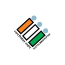

Software Engineer · Multi-Agent LLM Platforms · Cloud-Native Backend · Genomic AI · Transcriptomics · SLURM HPC · Agent Orchestration
I architect and ship production-grade agentic platforms — turning cutting-edge AI research into resilient, scalable cloud systems.

Bridging the gap between complex research and production-grade engineering.
Software Engineer specializing in AI systems and backend infrastructure, with hands-on experience building production-grade multi-agent platforms powered by LLMs.
Designed and deployed agentic architectures with Google ADK coordinator routing and dynamic agent generation, enabling complex, multi-stage workflows across scientific, genomic, and enterprise domains.
Strong in Python, FastAPI, Docker, and AWS cloud-native architectures. Proven track record translating research prototypes into high-performance, fault-tolerant production systems in close collaboration with domain scientists.
Multi-Agent Architectures · Cloud-Native Microservices · Genomic & ML Pipelines
Design and deploy multi-agent LLM platforms with dynamic agent discovery, prompt chaining, tool execution, and complex state orchestration.
Build scalable, cloud-native microservices with Python, FastAPI, Docker, and AWS — from low-latency APIs to high-throughput data pipelines.
Collaborate with scientific domain experts to productionize machine learning pipelines, GWAS genomic tools, and enterprise NLP interfaces.
A history of building production-grade AI platforms, scalable backend services, and high-impact systems.
Formal education and foundational degrees in computer science and cyber security.
Open-source tools, system utilities, and experimental architectures.
Production-tested frameworks, distributed backends, languages, and security tooling I leverage daily.
Architecting coordinator and specialized domain agents with dynamic query routing and autonomous tool execution.
How my technical stack connects to deliver scalable intelligence
Whether you have an upcoming role, an interesting project, or just want to chat AI systems.
Hyderabad, Telangana, India
Open to full-time engineering roles and collaborative projects in AI systems and cloud backend infrastructure.